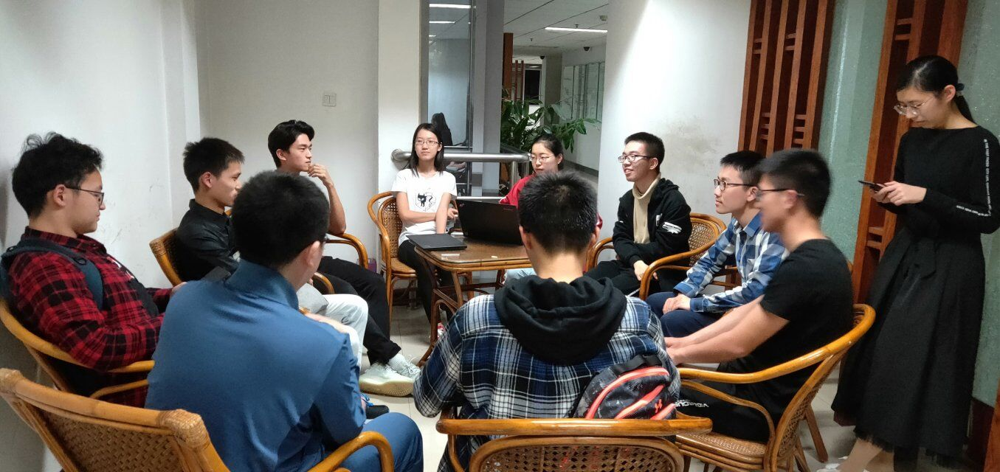

Collaborations
UESTC
Since our project is based on the database, our project's first step is to collect data
from multiple databases. From the very beginning, we took a look on the results of IGEM competition in 2018.
Luckily, we found that the UESTC team had already done the work of collecting data from various databases to
build their project, BioMaster.
 Our team quickly contacted with the UESTC team to ask if we could make good
use of the data. They satisfied our request without hesitation. After getting their data, we build our
project on it. Through the way of developing the project, we also contributed our biobricks to their project
which they might need. Their project was updated as well. During the process of our communication, both of our project were upgraded.
Our team quickly contacted with the UESTC team to ask if we could make good
use of the data. They satisfied our request without hesitation. After getting their data, we build our
project on it. Through the way of developing the project, we also contributed our biobricks to their project
which they might need. Their project was updated as well. During the process of our communication, both of our project were upgraded.

Figure 1: UESTC biomaster
Figure 2: Communicating with UESTC
SYSU
In June, we visited SYSU and had a meeting with their iGEM team members. We communicated
with our team projects and gave helpful suggestions to each other. They offered us useful advice on accuracy
issues in our project and helped us to fixed them. We asked them some questions related to their project and
helped them to clarify the experiment design. Moreover, we helped them to accelerate their experiment by
giving the data they needed.

Figure 3: Meeting between SYSU team
SDU
We also helped a girl from the SDU who had trouble in creating animation by software
during the time when we attended the CCIC meeting.
USTC
The USTC team is the other team of our school, which focuses on biology, and most of their members majored
in biology. Therefore, we communicate a lot throughout the whole project.

What's more, Pengcen Jiang, a member form the USTC team, has helped us how to use cobra tools and gave us a lot of suggestions on how to convert our data into practical meaning.
After having built our project, we invite the USTC team to test our tools. They give us a lot of advice on how to upgrade our project. Thanks for their feedback.

Our team, together with the USTC team, has conducted a 4-day experimental training in the lab, which aims at
helping more students to use our tools effectively and efficiently. Although most of our software team
members majored in computer science, we know more clearly about how the basic experiment is conducted and
what we can do to help synthetic biology researchers to improve their working efficiency through the process
of doing biology experiments.
Figure 4: Having a meeting with USTC team
Figure 5: Conducting experimental training
What's more, Pengcen Jiang, a member form the USTC team, has helped us how to use cobra tools and gave us a lot of suggestions on how to convert our data into practical meaning.
After having built our project, we invite the USTC team to test our tools. They give us a lot of advice on how to upgrade our project. Thanks for their feedback.